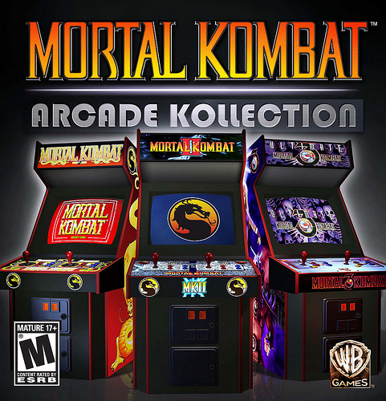

NetherRealm Studios
Company Perspectives and Story:
(source: www.netherrealm.com)
"The creative team that brought the Mortal Kombat franchise to life is now NetherRealm Studios, part of the Warner Bros. Interactive Entertainment family. With over 20 years of creation under our belts, NetherRealm’s mission remains the same; to create cutting edge entertainment and deliver industry leading tech, game art and overall gaming experiences.
NetherRealm Studios is a collaborative and creative environment, constantly striving to up the ante on what is possible in interactive entertainment. We encompass the best of both worlds – a team of dedicated professionals with years of experience, who are also at the forefront of an industry taking over the entertainment landscape. The passion and energy that made Mortal Kombat a reality is still on display every day in our offices, our hallways and most definitely the studio’s arcade room!"
CULTURE
"NetherRealm Studios is literally built on fun.
We work hard, but the sense of humor and fun that fills the office is what allows us to make incredible game experiences. We’re in the business of entertaining, and we always start with ourselves. There are several office outings, parties and activities throughout the year – from movies, to pick up basketball games and of course, impromptu video game tournaments.
NetherRealm Studios is also one of the premiere game developers in the country. As a WB Games company, you can count on full support for your creative vision, as well as the opportunity to work on AAA titles throughout your career. Working at NetherRealm Studios is an opportunity to work with some of the best in the industry."
Mortal Kombat Memories
Development Tales from NetherRealm Studios
(source: blog.us.playstation.com)
"I’m really happy to see the upcoming release of the Mortal Kombat Arcade Kollection, which hits PSN next Tuesday, August 30th. The MKAK is a great way to relive the classic Mortal Kombat arcade games right in your own living room, but I’m also excited that players who enjoyed this year’s new Mortal Kombat will soon have the opportunity to play the first three games that set the foundation for the entire fighting-game franchise." I was introduced to Mortal Kombat on April 20th, 1992. I was fresh out of art school and starting my career at Williams/Bally/Midway. I remembered being overwhelmed that I was actually walking into the building where some of my favorite games were created: Narc, Robotron, Defender, and Smash TV just to name a few. Mortal Kombat was yet to be released. However there were a few Mortal Kombat prototypes lining the halls of Midway that we could test out. I remember being just blown away by my first experiences with Mortal Kombat. What first struck me was the size of the digitized characters on the screen. They were huge! I remember selecting Kano as my first character: I was a big Terminator fan at the time, so the choice was obvious. I also remember how in awe I was working (and playing) along side of the guys that created the game. A few days after that, I met the actors that were filmed for the game. John Tobias and Ed Boon brought the whole cast of characters back in to capture the video bio sequences that happened during the attract mode. It was funny how low-budget the whole thing was. It was actually just filmed in the hallway where we tested the games with a low-end video camera, a few lights, and a piece of black cloth as the backdrop. It was a very garage-band scenario but I recall just being blown away that I was witnessing the creation of something big, never really knowing how big Mortal Kombat would actually become."
(In this video clip, Mortal Kombat’s longtime Lead Sound Designer Dan Forden discusses the origins of “Toasty!” — one of the most celebrated Easter Eggs in the history of gaming.)
"Mortal Kombat II was fun in that I had the opportunity to witness the team create the game from the ground up. I was working on another game team at the time, but I was slowly becoming friends with Tobias, Ed, and Tony Goskie. Tony is an amazing artist that bases his talent in surrealism; Mortal Kombat II’s introduction to Outworld was a perfect match for Tony. Luckily my office was directly across from Tony’s so I had the opportunity to see him create some of the most iconic environments in the game. I remember Tony’s disappointment when he had to remove the crucified four-armed Shokan from the Wastelands. We thought it was an interesting element in the background, but the company thought it may be perceived as sacrilegious. One of the best memories I had from the Mortal Kombat II days was when I was asked to be the floating monk in the Tower background. You can’t really tell it’s me in the shrouded robe, but at the time I dorked out hard telling everyone I knew that I was in the latest Mortal Kombat!"
(In this video clip, Creative Director and co-creator Ed Boon talks about the creation of Mortal Kombat’s iconic dragon medallion logo.)
Ed Boon: the creation of Mortal Kombat’s iconic dragon medallion logo."Mortal Kombat 3 is special to me because that was the first Mortal Kombat I was on as an artist. I was honored that John and Ed asked me to join the team. I basically worked alongside John, cleaning up characters, building costumes, and creating special FX. Making Mortal Kombat 3 was a really great time. We busted our asses. We worked crazy hours and stayed overnight quite a bit. Building the character costumes was probably the most fun. Now we build everything in 3D, but back then we had to rely on sporting goods stores, army surplus stores, Halloween shops, and a lot of duct tape. It was a blast getting the cyborg costumes together: it was a mix of BMX motocross gear, hockey protection, duct tape, and rubber tubing. For being really thrown together I am really happy with the way Sektor and Cyrax turned out. By the way, before they were known as Sektor and Cyrax, John Vogel named them Ketchup and Mustard."
(In this video clip, Mortal Kombat artist, animator, and motion-capture performer Carlos Pesina recalls how his mother reacted to his career choice.)
Carlos Pesina: His Mother reaction to his career choice"I am honored to still be working on the Mortal Kombat franchise. I love the Mortal Kombat universe and all the talented people I get to work with every day. In addition to that, I feel we have the best fans in video games. They are extremely devoted and our team deeply appreciates their devotion over the past (almost) 20 years. Thank you all sincerely."
NetherRealm (a few photos from the studio)
{kind=link}
{kind=link}
{kind=link}
{kind=link}
{kind=link}
{kind=link}
Back to top
MK Kast Series
The MKast Series 2: Episode 1The MKast Series 2: Episode 2 - Part 1
The MKast Series 2: Episode 2 - Part 2
The MKast Series 2: Episode 2 - Part 3
The MKast Series 2: Episode 2 - Part 4
The MKast Series 2: Episode 3
The MKast Series 2: Episode 4
The MKast Series 2: Episode 5
The MKast Series 2: Episode 6
The MKast Series 2: Episode 7
The MKast Series 2: Episode 8
The MKast Series 2: Episode 9
Back to top
Mortal Kombat - History of Fatalities:
Back to top
Read full article on wikipedia
Midway page
NetherRealm Official site
Warnerbros Official site